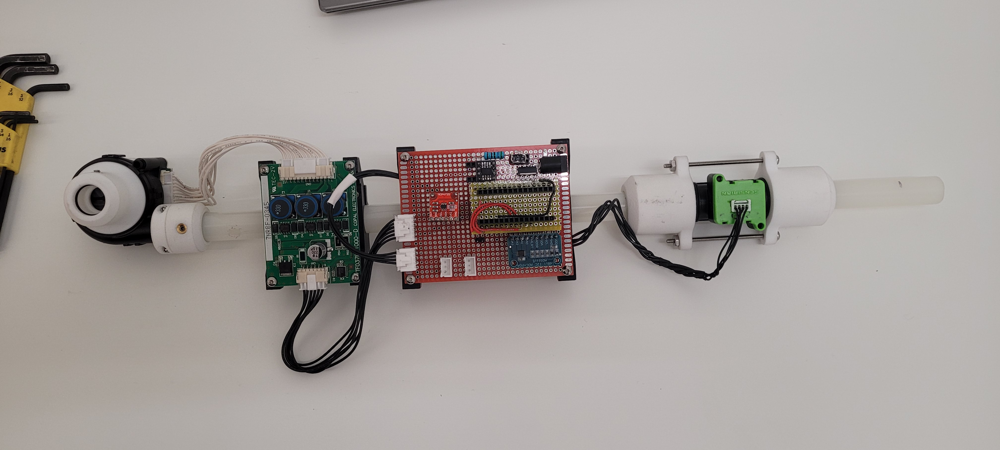
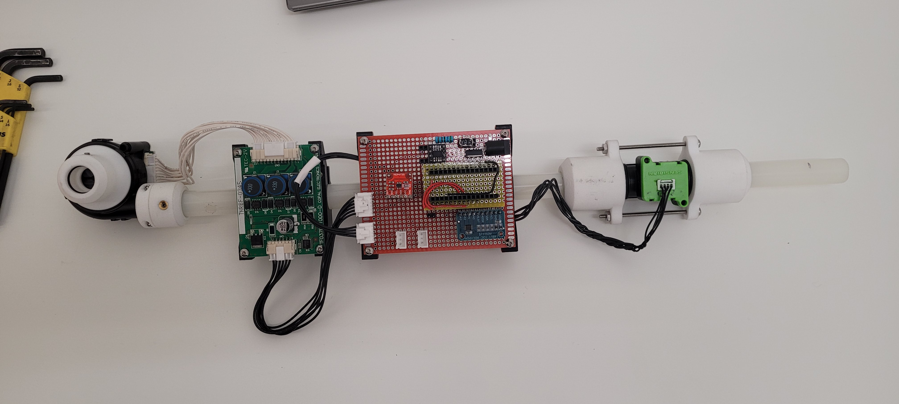
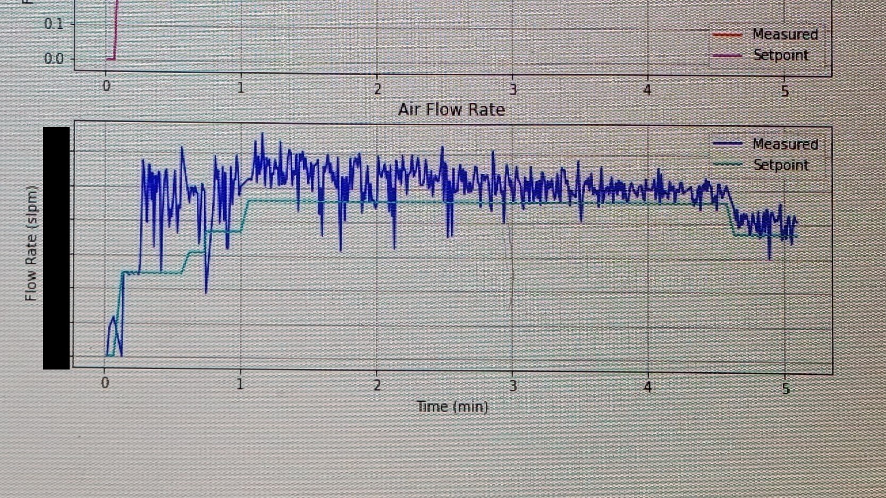

Air Intake Control PCB
Problem
As Mesodyne's Lightcell device matured from benchtop testing towards a final product, the propane burner's air supply needed to transition from the lab's air compressor to a more compact solution. The ultimate requirement for such a submodule would be power efficiency, as the Lightcell would eventually become a standalone power generation unit. To address this issue, a high-pressure blower fan was needed, as well as a feedback signal and a controller to guarantee the correct mass flow rate was being delivered. A presistent problem thermoacoustic resonances would occur between the flame and the blower device running under a PID loop.
Methodology
I began by experimenting with various off-the-shelf blower fans, mass flow sensors, and microcontrollers. The design philosophy was "fail fast, fail often" as I was climbing a steep learning curve into the circuit design world. While developing my first PCBs that would meet the minimum design requirements, I learned 4 incredibly important lessons:
- Before soldering a new circuit or using a new component, always test it on a breadboard.
- Do not forget to check continuity or shorts before applying power.
- Avoid crowding components together unneccessarially.
- Actually read the datasheet.
Essentially, I realized the importance of testing each assumption before jumping to conclusions. I learned this the hard way - by frying two Arduino Nano's, two Adafruit Bluefruit nRF52's, one Arduino Mega, two motor driver chips, and the USB adapter on my Lenovo laptop!
Iterations and Prototyping
The first iteration of the controller was based on an Arduino Due protoype PCB with a Sensirion flow meter as the feedback device. Both speed control and flow rate control were implemented in a cascading PID loop. This setup was problematic because the flow meter measurement would be affected by turbulent air exiting the blower, and the minimum fan speed was still too powerful for our needs.
 The second iteration included a laminar flow pipe between the blower and the flow meter, air bleed ports in front of the blower to cut down on flow rate, and a different controller - an Adafruit Bluefruit nRF52. The more powerful controller allowed for much smoother operation of the blower, and this device worked spectacularly well. However the entire device required 48W to run, and this would gobble up our power budget.

For the next version, I reverted back to the Arduino Nano for its greater availability, used a less powerful blower fan from Micronel, and a simpler full-bridge motor driver instead of the power-hungry BLDC motor driver board. These assembled into the PCB shown below. This board would be equipped with a 12-bit ADC module and would be back-compatible with the previous blower. However these features were never used because of some missing traces and incorrect wiring of the I2C signal lines.
The second iteration included a laminar flow pipe between the blower and the flow meter, air bleed ports in front of the blower to cut down on flow rate, and a different controller - an Adafruit Bluefruit nRF52. The more powerful controller allowed for much smoother operation of the blower, and this device worked spectacularly well. However the entire device required 48W to run, and this would gobble up our power budget.

For the next version, I reverted back to the Arduino Nano for its greater availability, used a less powerful blower fan from Micronel, and a simpler full-bridge motor driver instead of the power-hungry BLDC motor driver board. These assembled into the PCB shown below. This board would be equipped with a 12-bit ADC module and would be back-compatible with the previous blower. However these features were never used because of some missing traces and incorrect wiring of the I2C signal lines.
 By this point, most of the components were working out for us, but we needed to look further ahead in the future. We decided to design the next prototype around the STM32F07 family of MCUs because of their availability and accessibility. The board began accumulating additional features such as thermocouple chips, analog inuputs from thermistors, flash memory, multiple communication lines, analog pressure sensors, and power MOSFETs. After weeks of work and revisions in KiCAD, we came up with a solution that would be functionally equivalent to PCB v1, only supersede it in processing power and number of peripherals.
By this point, most of the components were working out for us, but we needed to look further ahead in the future. We decided to design the next prototype around the STM32F07 family of MCUs because of their availability and accessibility. The board began accumulating additional features such as thermocouple chips, analog inuputs from thermistors, flash memory, multiple communication lines, analog pressure sensors, and power MOSFETs. After weeks of work and revisions in KiCAD, we came up with a solution that would be functionally equivalent to PCB v1, only supersede it in processing power and number of peripherals.
Benchtop Performance
Designing the electronics was a time-consuming task, but even more effort was required during the tuning process for the blower. The device would work perfectly during the middle of the run when the burner had already heated up to its equilibirum temperature, but chaos broke out during the burner's cold ignition and startup. Following ignition, as the flame developed in size and stability the blower needed to supply a constant air stream, but instead the motor developed thermoacoustic vibrations due to its lack of sufficient back-pressure. As a result, combustion would oscillate violently, and no PID tuning would be able to fully dampen them.

Conclusion
While the system as configured is controllable, a PID loop coupled to an unknown system (the ignited burner) cannot be tuned to optimality seperately. One solution is to weaken the coupling between the blower and burner by means of a physical redesign of either one. Another solution is to run holisitic system identification during operation, but I found most PID auto-tuners to be too primitive for this. Potentially, a solution like reinforcement learning could be implemented since this powerful tenchique requires no information about the system, only the bounds of operation and a cost function.
Thermal Emissions Calorimeter
Disclaimer: many aspects of this project not disclosed here are confidential and proprietary to Mesodyne.
Problem
The goal of desingning a calorimeter was to measure the total power emitted from a burner in the form of thermal radiation. The surface of the calorimeter would be coated with black paint to absorb nearly all frequencies of light, and reflect none back. Unlike a spectrometer, this calorimeter would integrate thermal emissions across its entire collector area, and through accurate measurements of the inflow and outflow water temperatures, the power would be reported as one scalar value.
Methodology
A pivotal decision to the calorimeter design was to use a cooling jacket to control the boundary conditions around the collector block. Another key feature of the apparatus was to place cartridge heaters inside the collector block available during calibration.
CAD Design and Fluidics

Mathematical Modeling

Data Analysis

Flexure Stage for Optical Posts
Problem Statement
I needed to alleviate one translational degree of freedom on a facuum flange, but simultaneously constrain the other 2 translational and 3 rotational ones. The total weight supported by the flexure stage would amount to 10 kg, while the direction of compliance would be perpendicular to that loading. Additionally, this would be an adjustable extension, allowing for an arbitrary but rigid positioning of the flange in 3d space.
Design Considerations
Applying the leaf flexure formula, I was able to calculate the total elasticity of the flexure as a function of length, width, and thickness. The length was chosen to be a standard width for off-the-shelf spring steel rolls, and the thickness was chosen such that the weight loading would not cause buckling in the material. The optimal solution was found by parameter searching over these discrete variables in a spreadsheet, and checking against our machinist's practical intuition.

Showing the translational degree of compliance. Thumb screws help tighten the components together to constrain the pitch angle and z-height.
Machining
The aluminium connectors were machined using the advanced cut-to-size-then-drill-some-holes fabrication technique. The leaf flexures on the other hand were the most labor intensive to machine. Spring steel is way less forgiving than aluminum when it comes to drilling holes.

This first approach of using a plastic jig held in a bench vise to drill through individual springs -- failed spectacularly.
A second approach used a mill and some sacrificial aluminium pieces to hold the steel in place. While this produced a more precise component, many drill bits were dulled in the process.
Result
We discovered a minor issue where the thumb screws could not clamp down with enough force when hand tighetened, but this was fixed by replacing them with socket head screws, and inserting grip washers in between the aluminum components. The flexure became a convenient part of our experimental setup.
The flexure stage attached to the vacuum flange and mounted on an optical table.
Automatic Cat Feeder

Feed me hooman!
Description
While on vacation for a few days, I needed a way to keep our cat fed on a daily basis. I decided to quickly fabricate a cat feeder out of materials I found in my garage. The idea was to use a rotating disk and an equally-compartmentalized cylinder. Each compartment holds a cat's daily ration of food, and every 24 hours, the disk rotates into position under that compartment to let the food fall through by its own weight. This contraption would be mounted above the cat bowl.

Brainstorming and sketching
Design & Fabrication
After an initial round of brainstorming, I modeled the idea in SolidWorks, making sure to size the components according to the stepper motors and pieces I already had on hand. The rotating disk would be secured by the screw-on lid of the plastic container, and all sliding surfaces would be lubricated to prevent them from seizing up.

3D SolidWorks model with its section view showing how the rotating components are secured (using ball bearings and plastic bushings)
For the axle which connects the large gear to the disk I used a wooden dowel on which I press fit everything else (and sanded it where it needed to rotate freely). I also 3D printed the two gears which increased the torque from the motor.

Testing the prototype
The final step was to put the prototype to the test. The house was cold during our departure, so although the stepper motor heated up to around 120 degrees Fahrenehit due to several days of powered use, it didn't burn out in the end.
When we came back the cat was still alive and happy! (although perhaps a bit chubbier)
Machining
I have been working as a Junior Machinist at the Forsyth machine shop on Northeastern's campus since the spring of 2021. Here are a few projects during which I have employed most of my machining knowledge and learned more.
Aesthetic Spinning Top
The idea was to make a top which would make a satisfying desk toy but also demonstrate the possibility of joining multiple material types into a solid object. As an increased hardness of the point of contact leads to decreased fricitonal losses, a stainless steel core was used, while a brass exterior provided the aesthetic. Pressfittng the two cylinders together was a process of trial and error. Initially, they were simply pressed together using a bench press with no thermal processing and this resuled in unfavorable cavities to form in between the steel and brass pieces. Later, with the second attempt, the brass piece was heated up with a blowtorch while the steel was cooled with liquid nitrogen. This allowed the former to expand and the latter to contract, resulting in much tighter tolerances at room temperature.
Top in spinning position
Benchtop 2-in-1 Toolpost
When inserting a cutting tool in a 5C collet (used on the Tormach mills), the collet needs to be secured in place while a torque wrench is used to tighten it properly. The challenge was to design a toolholder to hold 2 different collet sizes as to economize for space on the worktable.

Designing the toolholder by sketching. A requirement is to accomodate 2 different collet sizes.
The 1/4 in steel pieces were first waterjet, then press fit, and then welded together. The difficulty was finding the right tolerances for the tab and slot features, but this was solved after two iterations.
Toolholder mounted on a worktable
In the end, this in-house solution performed better and more reliably than Tormach's collet closers. This project is open source, and the part/DXF files can be found here.
Self-balancing inverted pendulum
Inception
This project first started at an engineering summer camp taught by MIT Professor Alex Slocum where we were instructed to find a problem and apply the FUNDAMENTAL principles of design to the entire process. This project grew into a larger robotics endeavor where I learned PID control alrogithms, electronics, machining, prototyping, felxure design, and acquired many more analytical skills.
Description
An inverted pendulum is an inherently unstable system becasue gravity is not a restoring force but an applied force that coerces the pendulum to a stabler equilibrium (where it is hanging like a normal pendulum). To keep the pendulum in equilibrium, a restoring force must be applied. One way to do this is by accelerating the pendulum's refrence frame and making use of Newton's 2nd law, "F=ma". Using only one degree of freedom, the falling mass may be kept in its original position despite external disturbances which may cause perturbations. There are many YouTube videos featuring these types of machines and how they work.
Functional Requirements
To fit on a benchtop, the linear stage needed to lay horizontal, and it required a sliding carriage on which to secure the pendulum mechanism. For coolness points, the pendulum had to carry an object up to 1kg in mass while in balance. This meant that the pendulum assembley had to be rigid enough to withstand the load, and the DC motor powerful enough to accelerate the pendulum to the necessary velocities. This also meant that the linear stage needed to be long enough to allow for large displacements of the pendulum base in case it needed to deccelerate gradually. The mathematical model for the inverted-pendulum system is simple but it is also highly nonlinear, so sensing and feedback loop control is required to keep it at a constant angle.

Using a Python script and physics simulation to approximate the maximum power draw of the motor.
Limitations
The main limiting factor was my budget. I didn't want to spend more than $300 on the entire assembly so only the most essential precision components were purchased from McMaster-Carr. This included the precision ground steel rods and the teflon bearings which were cheaper than regular ball bearings. With no initial machining/engineering experience, the first attempts lacked the necessary precision tolerances. This lack was compensated for through the use of built-in flexures on the rail carriage. Another limitation was physical space. This was a machine which needed to be portable and take up little space on the benchtop, but also be large enough to handle with normal garage tools. Finally, it needed to be safe enough to poke with a finger (and demonstrate enternal perturbations), so safety measures had to be integrated into the design as well.
Brainstorming and Design
The first step was to sketch ideas and think of all the possible ways to satisfy the functional requirements within the limitaitons. The options were narrowed down once a few benchtop models were whipped up using LEGO technic pieces. Afterwards, the next stage was to CAD model everything in SolidWorks and Fusion 360, and further simplify the design while making sure to consult with peers. The final design concept was kept throughout the building stage, only the individual component layout and structure changed dramatically. Consider the evolution from 2018 to 2021 shown in the images below.

Fusion 360 assembly showing initial design (2018).

SolidWorks assembly showing final design (2022).
Component: Flexured Carriage
A large issue during the building and design phase was that the components used are tight toleranced and any displacment causes enormous stresses that bind up the carriage motion. Therefore, mechanical flexures, are used to decrease the spring constant of various motion components and reduce the stresses casued by load-induced strains. I kept an engineering notebook all along to record my progress and figure out formulas.

Figuring out the tolerances in the linear carriage, and the optimal flexure design to accomodate them.
The most important flexures on the machine are ones which hold the linear bearings in place and are attached to the carriage body. The flexures account for misalignment errors of the two rods relative to each other, as well as how the carriage blocks are attached to the carriage chassis.

Runnng FEM simulations on various bearing mount flexure designs to determine the smallest and most effective form factor.
Initially these were to be waterjetted out of aluminum bar stock, but the more economical choice of 3D printing them won out in the end.
Another important flexure in the carriage assembly is the carriage chassis itself which compensates for the vertical misalignment of the two carriage blocks. Becasue of the limitations of how the bearing flexures are able to bend, this flexured chassis makes up for the lost degree of freedom.

Runnng simulations on the carriage chassis flexure to find the optimal tab width.
This piece was cut out of 1/8 inch low-carbon steel on an OMAX waterjet cutter.

Instaling the flexured chassis.
Component: Belt Tensioner
There had been a couple iterations for the belt tensioner which would pull the two ends of the timing belt together and also be secured in a recess of the linear carriage. The first design involved a platw which would pull down a small belt section which interloccked with the two loose ends and pulled them towards the center. This worked fine until the belt section gradually deformed and loosened up, thereby losing its tension.

Designing and installing the first belt tensioner.
The second belt tensioner was build out of aluminum stock and steel bolts so that it would be capable of applying much larger tensions with minimal installation work. This required lots of manual machining and failures (wrong speeds/feeds, broken tap, insufficient tolerancing, etc.), but in the end it came out great.

The new and improved belt tensioner.
Results
As of now, the linear stage is up and running. There is a PID loop running through an Arduino-Uno which takes in encoder data from the motor and adjusts the motor input voltage accordingly. The motor that is used is a VEX Mini Cim motor, and the motor controller is a Talon SPX. You can see a video of the linear stage being controlled by a potentiometer position.
In the near future I hope to get the pendulum installed and another fedback loop running through the Arduino to monitor its angular position. Then I will be able to control the pendulum setting a position and letting the machine balance itself!
Murder hornet defense system

Watch out for these bad boys!
Description
To safeguard our hardworking bees from the merciless attacks of murder hornets, a smart device is required to disable these troublemakers before they have a chance to inflict any damage. Look no further: introducing the HiveGuard, an open-sourced, AI-enabled, bug zapper security camera. Its main processor is a Raspberry Pi 3 which runs OpenCV on a pretrained model to interpret live footage from a Raspberry Pi camera. No charging is required, as it is designed to be recharged by the sun, and can run up to three days in dim sunlight (a must-have for you New Englanders). The electrical box, which also houses the camera, is connected to a bug zapper circuit at the beehive entrance, which is activated when a threat is detected. Just point the clear-lidded box at the beehive, press the power button, and let it start monitoring the beehive. To see live camera footage you can use a VPN service and a solid wifi connection.
Progress
This project is still in its development phase. Up until now, this project has demonstrated the possibility of running such a system off-grid and powering it solely with solar energy. I have also expreimented with turning the computer on and off in a cycle to conserve power. With AI algorithms running on the Raspberry Pi, there will be a sizable power draw, so having an acurate characterization of the system is necessary. Also, I have been able to connect to the camera and see its live feed it two different ways, one using a home wifi, and the other is configuring it as an access point.
Design Process
The first step was identifying the correct processor and power solutions. A Rapsberry Pi 3 was chosen due ot its low power draw and relatively high computing speeds. Moreover, there can also be added a USB AI accelerator such as Google's Edge TPU accelerator.

A spreadsheet to calculate power requirements for a the self-sustained solar-powered camera.

CAD model of electrical box assembly.

Integrating electronic components in a preliminary test.

Circuit diagram of electrical box internals.
The Arduino is included in the electrical box becasue the power bank periodically shuts down when too little current is being drawn. So every 40 seconds, current is drawn through a small resistor which resets the power bank's timer. The Arduino also reboots the Rapsberry Pi when it is told to do so, in order to conserve electron juice.
Bill of Materials
| Name |
Type |
Source |
Link |
Price |
| Waterproof ABS Project Box |
Hardware |
Bought |
Amazon |
$29 |
| Transparent acrylic divider |
Hardware |
Custom |
|
|
| 3D-printed parts |
Hardware |
Custom |
|
|
| Arduino Nano |
Electronics |
Bought |
Amazon |
$7 |
| Raspberry Pi 3 B+ |
Electronics |
Bought |
Microcenter |
$25 |
| Raspberry Pi camera Module v2.0 |
Electronics |
Bought |
Microcenter |
$25 |
| Photovoltaic Array, 28W 5V |
Electronics |
Bought |
Amazon |
$64 |
| 30,000 mAh Battery Pack |
Electronics |
Bought |
Amazon |
$25 |
| Power MOSFET (30 A, 60 V) |
Electronics |
Bought |
Amazon |
$8 |
| 5mm LED (1 Red, 1 Yellow) |
Electronics |
Bought |
Sparkfun |
$10 |
| Rocker Switch 7x10mm |
Electronics |
Bought |
Sparkfun |
$2 |
| Resistors (68, 330, 10k, 47k) |
Electronics |
Bought |
|
|
| USB 2.0 Cable (Sacrificial) |
Electronics |
Custom |
|
|
| USB Cable 2.0 to Mini, 6ft |
Electronics |
Bought |
Amazon |
$10 |
| SanDisk USB Drive 64GB |
Electronics |
Bought |
Amazon |
$11 |
| Total |
|
$236 |
|
|
Mahogany Deck
More content will be posted soon!
DIY CNC Router
More content will be posted soon!